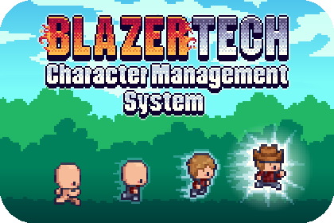
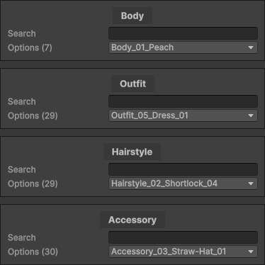

Quick Start Guide

This guide should get you on your feet and teach you the basics of how to use the BlazerTech Character Management System.
It's recommended to read through the Basic Concepts before reading the Quick Start Guide.
Creating a Character Type
If you only plan to use the built-in characters you can skip straight to Creating a Character Template
This guide will show you how to create both Unified and Layered Characters.
Create a Character Type Asset Right click the Project window and navigate to Create > BlazerTech > Character Management System and select either Layered Character Type or Unified Character Type.
Tip
Unsure which Character Type to create? Read more about the difference between them here
You can name the asset whatever you'd like.
Character Type Core Fields
Three fields are required regardless of the Character Type you chose.
Character Type ID:
A unique identifier for this Character Type. Can be whatever you want as long as it's not the same as another Character Type.
Base Spritesheet:
The core spritesheet that contains all frames that characters of this type will include.
All future characters will need to have a spritesheet that is the exact same size as the Base Spritesheet.
The Base Spritesheet should be the character in it's most barebones state without any extra clothing, hair, accessories, etc. Set the Sprite Mode of the spritesheet to Multiple. This will let you slice the spritesheet into multiple sprites so each frame can be used individually.
Character Controller: (Optional)
If you choose to, you can create an Animator Controller and assign it to the Character Controller field. Animation clips in the Animator Controller should use sprites from the Base Spritesheet otherwise the character won't be displayed correctly when the character shader is applied.
Later in this guide when you learn how to use your character you can have the Character Controller automatically applied when the character is used.
No further setup is required for Unified Character Types.
Layered Character Specific Setup
Since Layered Characters are built of multiple layers, we need to define what those layers are.
Create Layer Assets Each layer is represented as a separate scriptable object. To create a layer once again right click the Project window and navigate to Create > BlazerTech > Character Management System > Layered Character Type > Character Layer.
A layer asset contains all spritesheets that can be used for that specific layer. These are called Layer Options.
Read Character Layers to learn how to properly setup each layer and add Layer Options.
Creating a Character Template
Now that we have our character type created, we need an actual character.
There are many ways to create a character from a Character Type but for this guide we'll be using the simplest one, a Character Template.
You can think of a Character Template as a blueprint that lets you create a character from it later during runtime.
Right click the Project window and navigate to Create > BlazerTech > Character Management System > Character Templates and select either Layered Character Template or Unified Character Template.
Unified Character Template Setup
A Unified Character Template requires 3 things
- A reference to the Unified Character Type it's meant to be used for.
- A name for the character when it gets created.
- A reference to the spritesheet of the character.
- This spritesheet should be the exact same size as the Base Spritesheet in the Character Type and contain the same animations.
- Sprite Mode should be set to Single since we won't be using it directly. it'll be passed to the Character Shader.
- Set the Filter Mode to Point (No Filter)
- Optionally set Compression to None (Generally not needed for pixel art)
That's it! Now go to Character Usage to learn how to create a character from your template.
Layered Character Template Setup
A Layered Character Template requires a reference to the Layered Character Type it's meant to be used for. As well as a name for the character when it gets created.
Once the Character Type has been set, a list of layers will appear. These are the same layers you setup in the Layered Character Type.
Each entry in the list contains a dropdown allowing you to choose which layer option you want to use. And a search bar to narrow down the list if needed.

Tip
If the layers list is not correct for whatever reason, you can click the Recreate List button at the bottom to remake the list. This will reset all layer options you chose.
Character Usage
The easiest way to use a Unified or Layered Character is with a Character Loader component.
If you're using a Unified Character Type add the Unified Character Template Loader component.
If you're using a Layered Character Type add the Layered Character Template Loader component.
Character Loader Fields
The following fields are required for all Character Loaders.
References
- Renderer
- Most commonly a
Sprite Renderercomponent. The Character Shader will be applied to this renderer.
- Most commonly a
- Set Animator Controller (Bool)
- Toggles if the Character Controller from the Character Type should be used or not.
- Animator
- The
Animatorcomponent to apply the Animator Controller set in the Character Type.
- The
Loading Settings
- Loading Mode
- Asynchronous - Loads the character in the background without freezing the game. The character may not be visible right away while it loads.
- Synchronous - Loads the character synchronously which freezes the game while loading.
- Load Character On Start (Bool)
- if toggled, the character will be loaded automatically when the
Startmethod is called. - If not toggled the character will have to be loaded by calling the
GetAndShowCharacter()method.
- if toggled, the character will be loaded automatically when the
Character Template Reference
At the bottom of the component is a field that says either:
- Unified Character Template
- Layered Character Template
Depending on the Character Loader component you're using. Regardless, reference a Character Template in that field.
This is the template that will be used when creating a character during runtime.
Now play the game and if Load Character On Start is true then you'll see your character in-gama.
Congrats! You now have your first working character!